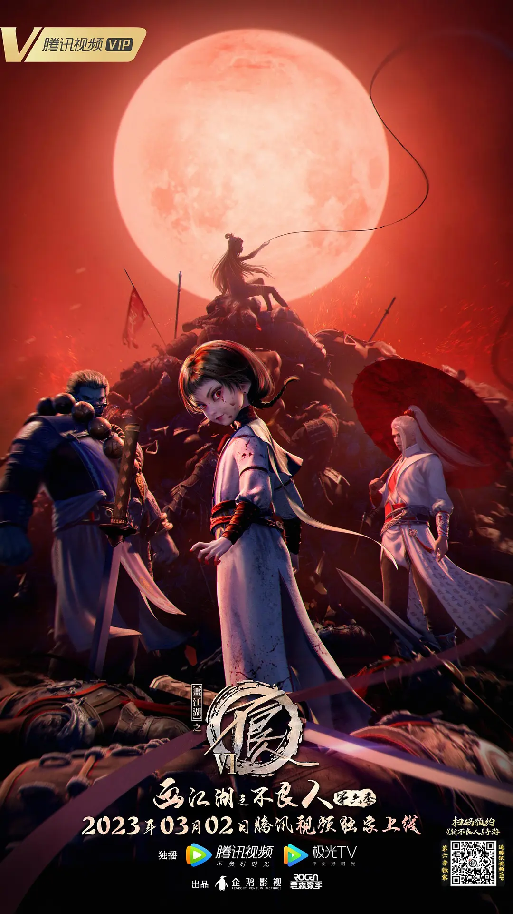

- 动漫《画江湖之不良人》讲述的是在唐朝末年，天下大乱，藩镇割据，群雄并起时期，据说黄巢叛军攻陷长安之前，官府中的神秘组织--'不良人'，曾经执行过最后一次任务，然后便消失不见了，几乎与他们同时消失的，还有叛军搜遍长安也未曾找到的国库宝藏，自此以后，江湖上便传出一条谣言，在传说中的龙泉剑上，隐藏着一个天大的秘密。
- 直到有一天，一个名叫李星云的神秘孤儿，机缘巧合下被隐士阳叔子所救，并拜在其门下学武，数年之后，李星云与师妹陆林轩下山历练，途中结识了姬如雪和张子凡两个好友，后来又偶然得到了传说中的龙泉剑。
- 这样一来，李星云和龙泉剑引起了包括玄冥教、通文馆、幻音坊和天师府等诸多门派的觊觎，他们动着各种各样的心思，或巧取豪夺，或通缉追杀，各种手段招数无所不用其极，甚至连消失已久的'不良人'也有重出江湖的迹象。
- 李星云，这个身世成谜的少年，就这样和他的朋友们周旋于险恶的江湖之中，为了求得一条生存之道而努力挣扎着。
- 李淳风代表的是天道，强调顺应天道，天下为公，即天道运而无所积，故万物成；帝道运而无所积，故天下归，因此他会在袁天罡屠杀十二峒之前提前让十二峒避世而居，一方面是为了拯救十二峒族人，另一方面也是为了不让兵神现世，拯救更多的人。
- 而袁天罡代表的是霸道，强调事在人为，人定胜天，即君霸王，社稷定；君不霸王，社稷不定。他不想看大唐覆灭，想通过一代代不良人的努力救唐，因此他会假安史之手，赐死贵妃，断念玄宗；纵黄巢造反，警示僖宗；利用十二峒圣蛊守护龙泉。
- 令蚩姓兄弟入十二峒恫引兵神怪坛出世；解散不良人，散龙泉之密令整个江湖为之拼命；瓦解玄冥，覆灭大梁；诛杀晋王，计灭岐王；历练天子，授其武功；利用假天子让真天子游历诸国，俘获人心；以死上谏，为天子开局。
如果单从主角冒险经历来看，《画江湖之不良人》一部充满热血的作品。李星云的神幻历险是如此的平实，以至于每个人都能从他的经历中感受到不容易与热血以及友情的体验。
动漫《画江湖之不良人》是一个低武实力的江湖争霸，这部剧在武打场景、视觉效果、剧情张力等方面都表现得十分出色，可谓是一部让观众过瘾的武侠剧。